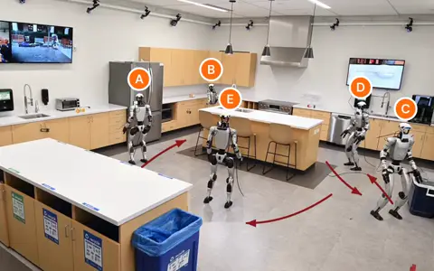
HomeBody: A Humanoid That Explores, Remembers, and Acts on Its Own
TL;DR: We connect VLM reasoning, spatial memory, and humanoid skills for open-ended tasks without policy retraining.
I am an undergraduate at Caltech studying CS. I work with Prof. C. Karen Liu and Dr. Guy Tevet in The Movement Lab at Stanford University. I am interested in robot learning, particularly how reasoning agents can compose reusable skills and learn new ones to generalize across tasks and environments.
During the school year, I work with Prof. Aaron D. Ames and Lizhi Yang in the AMBER Lab at Caltech. Previously, I was an MTS intern working on compliant humanoid whole-body control at FortyFive Labs / MIT with Dr. Ge Yang and Dr. Gabriel Margolis.
Earlier, I worked on RL post-training for AI4Math with Prof. Tony Yue Yu in Caltech's PMA Division, and on preventing forgetting in continual learning. I also worked as a software engineering intern in VMware's R&D division, focusing on cloud computing.
Applying to Ph.D. programs for Fall 2027. Happy to chat. Feel free to reach out!
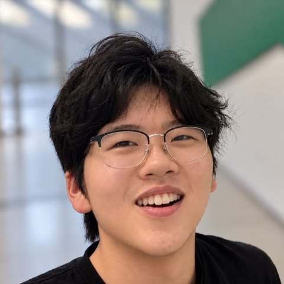

HomeBody: A Humanoid That Explores, Remembers, and Acts on Its Own
TL;DR: We connect VLM reasoning, spatial memory, and humanoid skills for open-ended tasks without policy retraining.
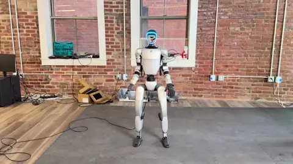
Functionally Compliant Humanoid Whole-Body Manipulation
TL;DR: We enable contact-rich humanoid manipulation with stiffness that can be adjusted for each task.
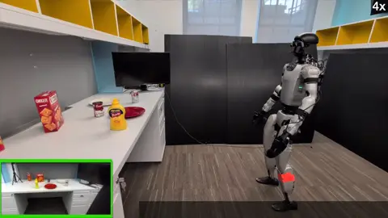
HANDOFF: Humanoid Agentic Task-Space Whole-Body Control via Distilled Complementary Teachers
TL;DR: We distill complementary teachers into a whole-body controller for VLM-driven humanoid agents.
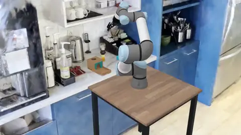
Lucid-XR: An Extended-Reality Data Engine for Robotic Manipulation
TL;DR: We turn XR demonstrations into realistic robot training data with generative AI.
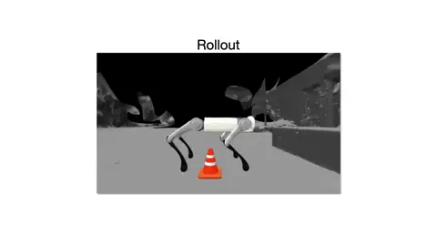
The Neverwhere Visual Parkour Benchmark Suite
TL;DR: We benchmark visual parkour in 60+ realistic scenes using closed-loop evaluation.
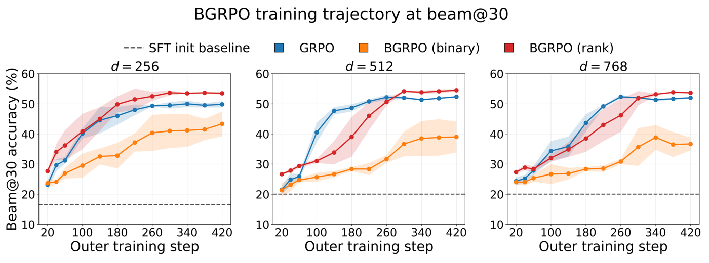
Discovering Hidden Algebraic Structures via Transformers with Rank-Aware Beam GRPO
TL;DR: We adapt GRPO to beam search to uncover hidden algebraic structures.
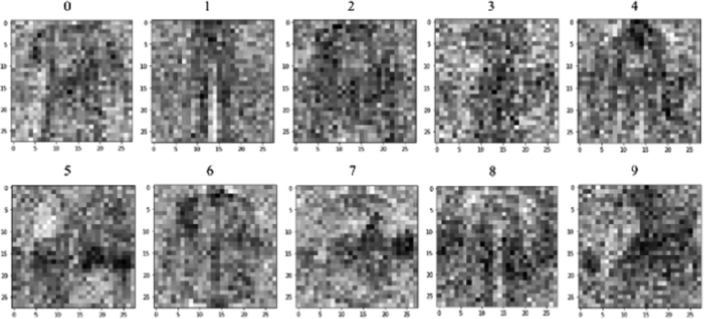
Alleviating Catastrophic Interference in Online Learning via Varying Scale of Backward Queried Data
TL;DR: We reduce forgetting by replaying generated examples at multiple scales.
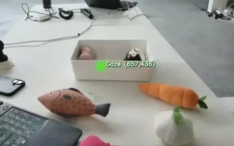
TL;DR: We combine gaze, hand motion, and foveated video to predict grasps about 0.5 seconds early.
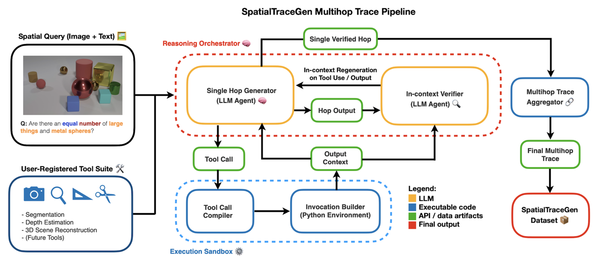
SpatialTraceGen: High-Fidelity Traces for Efficient VLM Spatial Reasoning Distillation
TL;DR: We generate spatial-reasoning traces for vision-language models.
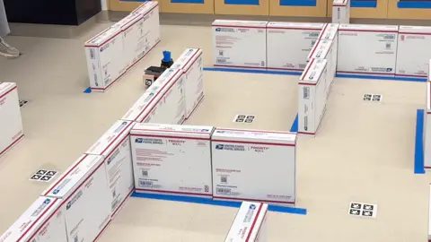
Full-Stack Pac-Man Robot
TL;DR: We combine localization and motion planning to build an autonomous Pac-Man robot.
2nd place, Caltech Mobile Robot Competition 2025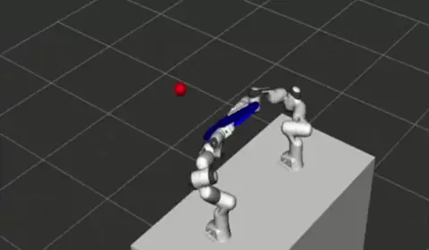
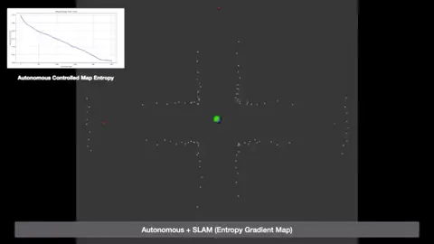
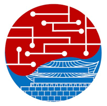
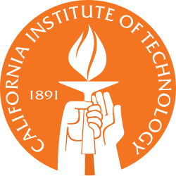
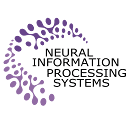
My favourite robots are 1) Mobi from BrainPop, 2) Astro Boy, and 3) DUM-E. If I'm not working, you'll most likely find me in the gym, playing basketball, or walking my two dogs.